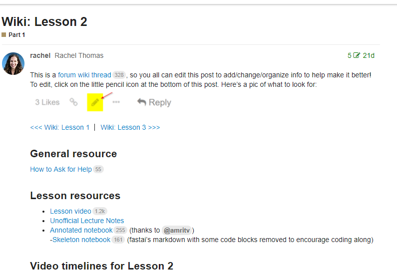
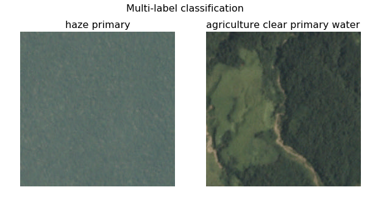
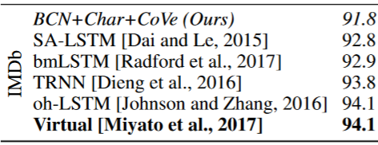
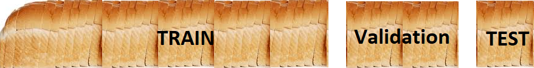
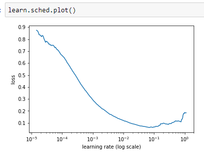

<!doctype html>
<html lang="en">
    <head>
        <meta charset="utf-8">
        <title>Fast.ai MOOC</title>
        <link rel="stylesheet" href="./css/reveal.css">
        <link rel="stylesheet" href="./css/theme/moon.css" id="theme">
        <link rel="stylesheet" href="./css/highlight/zenburn.css">
        <link rel="stylesheet" href="./css/print/paper.css" type="text/css" media="print">

    </head>
    <body>

        <div class="reveal">
            <div class="slides"><section  data-markdown><script type="text/template">
## Intro

smueller.tampa.ai@gmail.com

[AI-Tampa Slack Invite](https://join.slack.com/t/ai-tampa/shared_invite/enQtMzU2Mzk4NTQ1Mzc3LWZkZWJhZTMwMWFhNzY2MmI2NzIzMDM0MWZmMDY1Y2U5YzJiZDNhZDBkN2Q4ZWU0ZmNhYzI1N2FhZmI3NzQyNzM)

[AI-Tampa on Twitter](https://twitter.com/AiTampa)</script></section><section  data-markdown><script type="text/template">## Tampa.ai

Looking for Presenters
</script></section><section  data-markdown><script type="text/template"># What can you learn from Fast.ai MOOC

* Quick Flyby of Concepts (~34 hrs of video)
* State of the Art Models
* Can Code -> Can Do Deep Learning
</script></section><section  data-markdown><script type="text/template">## Course
* U-San Francisco

Jeremy Howard and Rachel Thomas
* YouTube Videos
* Jupyter Notebooks
* Top-Down Approach
* Wiki and Forums
* PyTorch
* Need NVidia GPU 

  Paperspace ~ $0.40/hour</script></section><section  data-markdown><script type="text/template">[Dogs vs Cats lesson1.ipynb](https://nbviewer.jupyter.org/github/fastai/fastai/blob/master/courses/dl1/lesson1.ipynb)
</script></section><section  data-markdown><script type="text/template">[Lesson 2 Wiki](http://forums.fast.ai/t/wiki-lesson-2/9399)
</script></section><section  data-markdown><script type="text/template">[Designing great data products](https://www.oreilly.com/ideas/drivetrain-approach-data-products)

The Drivetrain Approach: A four-step process for building data products

</script></section><section  data-markdown><script type="text/template">* Problems to Solve
* Concepts
* Resources
* Part 2 Preview</script></section><section  data-markdown><script type="text/template">## Problems to Solve
* Image Classification
* Structured/Tabular Data
* Language Model
* Sentiment Analysis 
* Recommendations
* Character Prediction</script></section><section  data-markdown><script type="text/template">## Classification


</script></section><section  data-markdown><script type="text/template">## Structured/Tabular Data
Business Data

* Deep Learning for Categorical and Continuous Values
   
Rossman

Equadorian Grocery Store (Favorita)

Fifth Place Kaggle result

</script></section><section  data-markdown><script type="text/template">## Denormalize Your Data

</script></section><section  data-markdown><script type="text/template">## Categorical Data becomes Embedding Data

* Levels become continuous values

 [0.20, 0.82, 0.45, 0.67]

* Relationship between Categories in the Embedding
* Easier for Neural Net to process</script></section><section  data-markdown><script type="text/template">## Special Categorical
* Date
```python
add_datepart(weather, "Date", drop=False)
add_datepart(googletrend, "Date", drop=False)
```
DayOfWeek, Year, Month, Day, DayOfMonth, DayOfYear, Is_Month_End
* Days Before/after Event
```python
['StateHoliday_fw', 'StateHoliday_bw',
    'SchoolHoliday_fw', 'SchoolHoliday_bw']
```</script></section><section  data-markdown><script type="text/template">## Step 1: Identifying Categorical vs Continuous

```python
  cat_vars = ['Store', 'DayOfWeek', 'Year', 'Month', 'Day', 'StateHoliday', 'CompetitionMonthsOpen',
    'Promo2Weeks', 'StoreType', 'Assortment', 'PromoInterval', 'CompetitionOpenSinceYear', 'Promo2SinceYear',
    'State', 'Week', 'Events', 'Promo_fw', 'Promo_bw', 'StateHoliday_fw', 'StateHoliday_bw',
    'SchoolHoliday_fw', 'SchoolHoliday_bw']

  contin_vars = ['CompetitionDistance', 'Max_TemperatureC', 'Mean_TemperatureC', 'Min_TemperatureC',
   'Max_Humidity', 'Mean_Humidity', 'Min_Humidity', 'Max_Wind_SpeedKm_h', 
   'Mean_Wind_SpeedKm_h', 'CloudCover', 'trend', 'trend_DE',
   'AfterStateHoliday', 'BeforeStateHoliday', 'Promo', 'SchoolHoliday']
   ```
   
   Add to Pandas Dataframe</script></section><section  data-markdown><script type="text/template">## Step 2: Which rows for Validation?
```python
val_idx = np.flatnonzero(
    (df.index<=datetime.datetime(2014,9,17)) & (df.index>=datetime.datetime(2014,8,1)))
```
## Step 3: Create ModelData from data frame
```python
md = ColumnarModelData.from_data_frame(PATH, val_idx, df, yl.astype(np.float32), cat_flds=cat_vars, bs=128,
                                       test_df=df_test)
```</script></section><section  data-markdown><script type="text/template">## Step 4: Create a list size of Embedding Matrix
```python
emb_szs = [(c, min(50, (c+1)//2)) for _,c in cat_sz]
```
</script></section><section  data-markdown><script type="text/template">## Step 5: Get Learner
```python
# def get_learner(self, emb_szs, n_cont, emb_drop, out_sz, szs, drops,
#                    y_range=None, use_bn=False, **kwargs):
m = md.get_learner(emb_szs, len(df.columns)-len(cat_vars),
                   0.04, 1, [1000,500], [0.001,0.01], y_range=y_range)
```

## Step 6: Call fit
```python
m.fit(lr, 3, metrics=[exp_rmspe])
```
> Before Fast.ai, had to create all of this logic by hand each time
</script></section><section  data-markdown><script type="text/template">## Embeddings Improves Shallow Learning

Rossman paper showed that using the Embeddings from Neural Net
Improved the performance of the Gradient Boosting and Random
Forest implementations for the same problem</script></section><section  data-markdown><script type="text/template">## Feature Importance In Structure Data Networks
(http://parrt.cs.usfca.edu/doc/rf-importance/index.html)
>To get reliable results in Python, use permutation importance

>Once model is trained, run the validation set with one column randomly reordered</script></section><section  data-markdown><script type="text/template">## Do we really need all of these columns?

* Method to reorder a column
* Retains the distribution
> Impact of Loss represents importance</script></section><section  data-markdown><script type="text/template">## Language Model
IMDB Reviews

* Train the Language Model to Predict the Next Word
</script></section><section  data-markdown><script type="text/template">## Fine-tune from Existing Language Model
* Fine-tune for Sentiment Analysis

[FitLAM Paper](https://arxiv.org/abs/1801.06146)</script></section><section  data-markdown><script type="text/template">## Sentiment Analysis
Sentiment of Movie Reviews

* Better than Any Other Research
* Models how Words Relate and can Categorize the Sentiment Better</script></section><section  data-markdown><script type="text/template">## Applying Sentiment Analysis
Law: Read Discovery -> Categorize document

Medical: Medical Language Model -> Fine Tune on Cancer Research</script></section><section  data-markdown><script type="text/template">## Recommendation Engine

<aside class="notes"><p>used for lots of user content, Apple News, Facebook Newsfeed</p>
</aside></script></section><section  data-markdown><script type="text/template">## Character Prediction
* Recurrent Neural Network
* GRU and LSTM

<aside class="notes"><p>Used to teach RNN and indicate it isn&#39;t that complex</p>
</aside></script></section><section  data-markdown><script type="text/template">## Fairness, Questions and Ethics
* Bias in Products

[Questions and Ethics in Lesson 13](https://youtu.be/xXXiC4YRGrQ?t=2130) 

[AI/ML Ethics, Biases & Responsibility Forum Topic](http://forums.fast.ai/t/ai-ml-ethics-biases-responsibility/14796/13)

</script></section><section  data-markdown><script type="text/template">## Concepts
* Initial Success
* Validation & Test
* Transfer Learning
* Handling Overfitting
* Structured Data
* Architecture Design
* Kaggle Competitions</script></section><section  data-markdown><script type="text/template">## Initial Success
* Four lines of Code
```python
arch=resnet34
data = ImageClassifierData.from_paths(PATH, tfms=tfms_from_model(arch, sz))
learn = ConvLearner.pretrained(arch, data, precompute=True)
learn.fit(0.01, 2)
```

</script></section><section  data-markdown><script type="text/template">
## Train - Validation - Test



[Fast.ai Validation Sets](http://www.fast.ai/2017/11/13/validation-sets/)</script></section><section  data-markdown><script type="text/template">Batches and Inference
* Mini-batch

* Inference/Prediction

</script></section><section  data-markdown><script type="text/template">## Transfer Learning
Replace the last layer and train
Un-freeze lower layers -> Fine-turn layers with Differential Learning Rates


[original image](https://image.slidesharecdn.com/practicaldeeplearning-160329181459/95/practical-deep-learning-16-638.jpg)</script></section><section  data-markdown><script type="text/template">## Handling Overfitting
* More data
* Data Augmentation
* Test Time Augmentation
* Stochastic gradient decent with restarts
* Start with smaller images
* Weight Decay (L2 Regularization)
> Dogs vs Cats -> 99.65% Accuracy </script></section><section  data-markdown><script type="text/template">## Learning Rate Finder


Order of Magnitude up from bottom </script></section><section  data-markdown><script type="text/template">## Kaggle Competitions
[kaggle.com/competitions](https://www.kaggle.com/competitions)
</script></section><section  data-markdown><script type="text/template">## Resources
[Student Notes on Fast.ai Part 1](https://github.com/reshamas/fastai_deeplearn_part1)

[Fast AI/Pytorch in Production](http://forums.fast.ai/t/using-a-fast-ai-model-in-production/12033/6)

[Fast.ai Machine Learning Discussion - Early Access Videos](http://forums.fast.ai/t/another-treat-early-access-to-intro-to-machine-learning-videos/6826)

[An Introduction to Deep Learning for Tabular Data](http://www.fast.ai/2018/04/29/categorical-embeddings)

[Google Images Download](https://github.com/hardikvasa/google-images-download)

[Best of Jupyter](https://github.com/NirantK/best-of-jupyter)
</script></section><section  data-markdown><script type="text/template">## More Resources

[Yet Another Pandas Tutorial](https://www.kaggle.com/shikhar1/yet-another-pandas-tutorial)

[#PrettyInGan](https://mobile.twitter.com/glagolista)

[Stochastic Weight Averaging - Alternative to Ensembling](https://towardsdatascience.com/stochastic-weight-averaging-a-new-way-to-get-state-of-the-art-results-in-deep-learning-c639ccf36a)

[Numpy Array Programming](https://realpython.com/numpy-array-programming/)</script></section><section  data-markdown><script type="text/template">## Tips
Create separate folders for your work

* Link to the Fastai project

Can git pull to always have the latest code
</script></section><section  data-markdown><script type="text/template">## Super-Convergence
[Leslie Smith's 1cycle Policy Paper](https://arxiv.org/pdf/1803.09820)

[Fast.ai Implementation](https://sgugger.github.io/the-1cycle-policy.html)


[image source](https://mobile.twitter.com/jeremyphoward/status/981928159879749632/photo/1)</script></section><section  data-markdown><script type="text/template">## Fast and Cheap
[Stanford DAWNBench](https://dawn.cs.stanford.edu/benchmark/#cifar10-train-time)
</script></section><section  data-markdown><script type="text/template"></script></section><section  data-markdown><script type="text/template">## Part 2 Preview


Super-resolution</script></section><section  data-markdown><script type="text/template">## Image Detection/Segmentation


</script></section><section  data-markdown><script type="text/template">## Style Transfer via CycleGAN/W-GAN
</script></section><section  data-markdown><script type="text/template">## Transfer Learning of Language Models

* Start with Wikipedia-derived Language Model
* Fine tune on IMDB
* Sentiment Analysis </script></section><section  data-markdown><script type="text/template">## French English Translation


</script></section><section  data-markdown><script type="text/template">## Study Group
* [AI-Tampa Slack Invite](https://join.slack.com/t/ai-tampa/shared_invite/enQtMzU2Mzk4NTQ1Mzc3LWZkZWJhZTMwMWFhNzY2MmI2NzIzMDM0MWZmMDY1Y2U5YzJiZDNhZDBkN2Q4ZWU0ZmNhYzI1N2FhZmI3NzQyNzM)
* Show and Tell Meetings</script></section><section  data-markdown><script type="text/template">## Show and Tell on Challenges
* Pick an old Kaggle Competition
* Short presentations of solutions


<aside class="notes"><p>speaker notes FTW!</p>
</aside></script></section></div>
        </div>

        <script src="./lib/js/head.min.js"></script>
        <script src="./js/reveal.js"></script>

        <script>
            function extend() {
              var target = {};
              for (var i = 0; i < arguments.length; i++) {
                var source = arguments[i];
                for (var key in source) {
                  if (source.hasOwnProperty(key)) {
                    target[key] = source[key];
                  }
                }
              }
              return target;
            }

            // Optional libraries used to extend on reveal.js
            var deps = [
              { src: './lib/js/classList.js', condition: function() { return !document.body.classList; } },
              { src: './plugin/markdown/marked.js', condition: function() { return !!document.querySelector('[data-markdown]'); } },
              { src: './plugin/markdown/markdown.js', condition: function() { return !!document.querySelector('[data-markdown]'); } },
              { src: './plugin/highlight/highlight.js', async: true, callback: function() { hljs.initHighlightingOnLoad(); } },
              { src: './plugin/zoom-js/zoom.js', async: true },
              { src: './plugin/notes/notes.js', async: true },
              { src: './plugin/math/math.js', async: true }
            ];

            // default options to init reveal.js
            var defaultOptions = {
              controls: true,
              progress: true,
              history: true,
              center: true,
              transition: 'default', // none/fade/slide/convex/concave/zoom
              dependencies: deps
            };

            // options from URL query string
            var queryOptions = Reveal.getQueryHash() || {};

            var options = {"transition":"fade"};
            options = extend(defaultOptions, options, queryOptions);
        </script>


        <script>
            Reveal.initialize(options);
        </script>
    </body>
</html>
